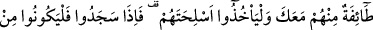
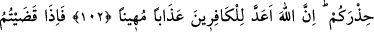
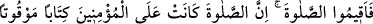
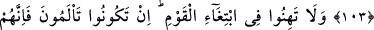
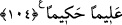

NAMAZ VAKİTLERİ
101- Yeryüzünde sefere çıktığınız zaman kâfirlerin size kötülük etmelerinden
endişe ederseniz, namazı kısaltmanızda size bir günah yoktur. Şüphesiz kâfirler,
sizin apaçık düşmanınızdır.
102- Sen de içlerinde bulunup onlara namaz kıldırdığın zaman, onlardan bir kısmı
seninle berâber namaza dursunlar, silahlarını da yanlarına alsınlar, böylece (namazı
kılıp) secde ettiklerinde arkanıza geçsinler. Sonra henüz namaz kılmamış olan
diğer grup gelsin ve seninle berâber namazlarını kılsınlar. Onlar da ihtiyat
tedbirlerini ve silahlarını alsınlar. O kâfirler arzu ederler ki siz silahlarınızdan ve
eşyanızdan gafil olsanız da üzerinize birden baskın yapsalar. Eğer yağmurdan
eziyet çekerseniz yâhut hasta olursanız silahlarınızı bırakmanızda size günah
yoktur. Yine de tedbirinizi alın. Şüphesiz Allah, kâfirler için alçaltıcı bir azap
hazırlamıştır.
103- Namazı bitirince de ayakta, otururken ve yanınız üzerinde yatarken
(dâimâ) Allah’ı anın. Güvene kavuşunca da namazı dosdoğru kılın; çünkü namaz
müminler üzerine vakitleri belli bir farzdır.